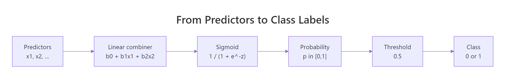
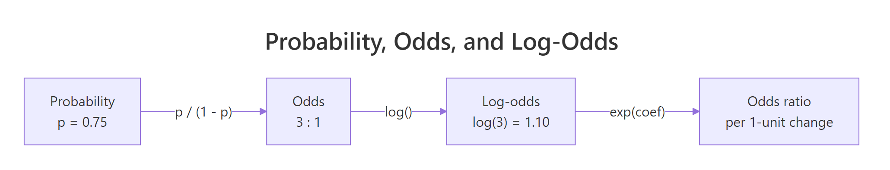
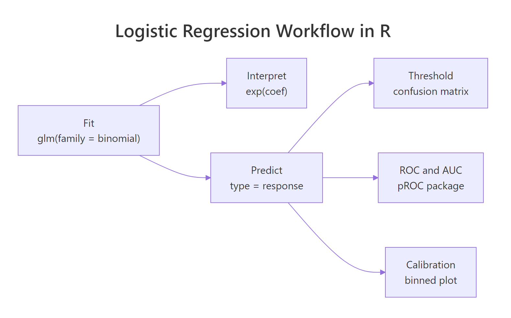

Logistic Regression in R: From glm() to Odds Ratios, ROC, and AUC
Logistic regression is a classification method that models the probability a binary outcome equals 1 as a linear combination of predictors passed through the sigmoid function. In R you fit it with glm(family = binomial), interpret the coefficients as log-odds (or exponentiate for odds ratios), then evaluate the classifier with confusion matrices, ROC curves, and AUC.
How do you fit a logistic regression in R?
The workhorse function for logistic regression in R is glm(), called with family = binomial. Give it a binary outcome, a set of predictors, and a data frame, and it returns a fitted model with coefficients, standard errors, z-values, and p-values. We will use the built-in mtcars dataset and model whether a car has automatic transmission (am = 0) or manual (am = 1) from weight (wt) and horsepower (hp).

Figure 1: From predictors to a 0/1 class label via the sigmoid.
Read the coefficient table first. The intercept is the log-odds of manual transmission when wt = 0 and hp = 0, which is extrapolation, so treat it as scaffolding, not meaning. The wt coefficient is strongly negative (-8.08): heavier cars are less likely to be manual. The hp coefficient is positive (0.036): more horsepower nudges the odds toward manual. Residual deviance (10.06) is much lower than null deviance (43.23), so the predictors are pulling real weight.
family = binomial means "fit on the log-odds scale with a logit link". The left side of your formula must be binary (0/1 or a two-level factor); glm then minimises binomial deviance rather than sum of squared errors. Swap in family = gaussian and you silently get linear regression on a 0/1 column, which is not the same thing.Try it: Fit a logistic model called ex_fit predicting engine shape (vs) from miles-per-gallon (mpg) and displacement (disp) on mtcars. Print its coefficients.
Click to reveal solution
Explanation: vs is already 0/1 in mtcars, so family = binomial works directly. Positive mpg coefficient and negative disp coefficient match intuition: efficient, small-displacement engines tend to be straight-six (vs = 1).
What do the coefficients mean on the log-odds scale?
Raw glm() coefficients live on the log-odds scale, not the probability scale. That sentence is the source of most logistic-regression confusion, so it pays to unpack it.
Odds are the ratio of the probability of the event to the probability of the non-event: if an event has probability 0.75, its odds are 3:1. Log-odds is just the natural log of that ratio. Log-odds is useful because it runs from $-\infty$ to $+\infty$, which matches the range of any linear combination of predictors.
The sigmoid function squashes log-odds back into a probability:
$$p = \frac{1}{1 + e^{-z}} \quad \text{where} \quad z = \beta_0 + \beta_1 x_1 + \beta_2 x_2 + \cdots$$
Where:
- $p$ = predicted probability that the outcome is 1
- $z$ = the linear combination of predictors (also called the logit)
- $\beta_0, \beta_1, \ldots$ = the coefficients that
glm()estimates - $x_1, x_2, \ldots$ = your predictors
The inverse of the sigmoid is the logit, which is what glm actually regresses:
$$\text{logit}(p) = \log\!\left(\frac{p}{1-p}\right) = \beta_0 + \beta_1 x_1 + \cdots$$
Let's extract the coefficients and read their signs.
Sign tells you direction: a negative coefficient lowers the log-odds of the event, a positive coefficient raises it. Magnitude on the log-odds scale is hard to read directly because one log-odds unit is not one probability unit. A change from log-odds 0 to 1 is a jump from p = 0.5 to p = 0.73, but a change from 5 to 6 is only 0.993 to 0.998. That is exactly why the next section reaches for exp().
Try it: Without running code, predict the sign of the hp coefficient in the original fit. Then confirm by pulling that coefficient in one line.
Click to reveal solution
Explanation: Higher horsepower is associated with manual transmission in this dataset (sports-car effect), so the coefficient is positive. coef(fit)["hp"] pulls the named element without recomputing anything.
How do you convert log-odds to odds ratios in R?
The single most useful transform in logistic regression is exp(). Exponentiating a log-odds coefficient gives you an odds ratio: the multiplicative change in odds for a 1-unit increase in that predictor, holding everything else fixed.
Put both coefficients and confidence intervals through exp() at the same time, so the output is ready to drop into a report.

Figure 2: The probability, odds, log-odds ladder and where exp(coef) lives.
Read the odds ratios like multipliers. wt sits at 0.0003, which means a 1000-lb (one unit of wt) increase multiplies the odds of manual transmission by about 0.0003, essentially zeroing them out. hp sits at 1.037, which means each extra horsepower multiplies the odds of manual by 1.037, a 3.7 percent bump per horse. The intercept's OR is astronomical because the zero-point is far outside the data, exactly the reason not to interpret it alone.
The confidence intervals for wt and hp both exclude 1, which matches the significant p-values in the summary table: both predictors meaningfully shift the odds.
cbind()ed tables side by side save every downstream question.Try it: Compute the odds ratio for wt alone (no CI) and describe in one sentence what it tells you about manual transmission odds.
Click to reveal solution
Explanation: Every extra 1000 pounds of weight multiplies the odds of manual transmission by about 0.0003, which is effectively "forget about it". Heavy cars are almost always automatic in this dataset.
How do you predict probabilities with predict()?
Once you have a fitted model, predict() turns new inputs into outputs. The one detail that trips people up is the type argument.
By default, predict(fit) returns predictions on the link-function scale, which for binomial glm is log-odds, not probabilities. To get probabilities, pass type = "response".
Each entry is the model's estimated probability that the car is manual. The Mazda RX4 (0.64) tilts toward manual; the Hornet Sportabout (0.12) tilts clearly toward automatic.
You can also predict for data the model has never seen. Build a new data frame with the same column names as the training predictors and pass it in.
A 3000-lb, 150-hp car comes out at a 93 percent probability of manual. That lines up with the data: lighter cars with reasonable power are disproportionately manual in mtcars.
type = "response" returns log-odds. If you feed log-odds into an ifelse(x > 0.5, ...) threshold, you will classify almost everything as negative because log-odds near 0 correspond to probability 0.5, and most of your points are likely much bigger or smaller than 0. Always specify type explicitly for glm predictions.Try it: Predict the probability of manual for a car with wt = 2.5, hp = 110.
Click to reveal solution
Explanation: Light car (2500 lb) with moderate power (110 hp) lands at a 99 percent probability of manual. The fitted boundary in mtcars is roughly weight-driven, so once you are below ~3000 lb, the model is confident.
How do you turn probabilities into class labels?
A classifier needs a decision, not just a probability. The mechanical step is to pick a threshold and compare each probability against it. The convention is 0.5, but that is a default, not a law.
Build the 2x2 confusion matrix by cross-tabulating predicted classes against actual classes.
Read the matrix diagonals as correct predictions: 18 automatics and 12 manuals classified correctly. Off-diagonals are errors: 1 false positive (automatic predicted as manual) and 1 false negative (manual predicted as automatic).
From the matrix, standard metrics fall out with one line of arithmetic each.
Accuracy at 94 percent, sensitivity (correctly caught manuals) at 92 percent, specificity (correctly caught automatics) at 95 percent. For a small dataset fitted on itself, those are optimistic numbers, but they show the mechanics end to end.
Try it: Rebuild the confusion matrix at a stricter threshold of 0.7 and report accuracy.
Click to reveal solution
Explanation: A higher threshold calls fewer cars "manual", which raises specificity (fewer false positives) but drops sensitivity (more missed manuals). Accuracy slips slightly to 0.91.
How do you draw the ROC curve and compute AUC?
The problem with reporting accuracy at a single threshold is that the threshold is arbitrary. The receiver operating characteristic (ROC) curve sidesteps that problem by sweeping every threshold from 0 to 1 and plotting true positive rate against false positive rate along the way. AUC (area under the curve) summarises the whole sweep as one number.
The pROC package is the standard R tool for this job. roc() builds the curve object and auc() pulls out the area.
An AUC of 0.99 is very high. The rough interpretation ladder: 0.5 is a coin flip, 0.7 to 0.8 is acceptable, 0.8 to 0.9 is good, above 0.9 is excellent, and 1.0 is perfect separation. Anything near 1.0 on training data should trigger a cross-validation check, because it often means the model has memorised the sample.
Now plot the curve itself. The diagonal is the "no-skill" reference; the farther your curve bows toward the top-left corner, the better.
Every point on that curve is one threshold. The top-left corner is the perfect classifier (100 percent sensitivity, 0 percent false positives). The closer you get to it, the better your threshold-metric pair.
Try it: Fit a single-predictor model using only wt, compute its AUC, and compare to the full model's AUC.
Click to reveal solution
Explanation: Dropping hp costs about a tenth of a percentage point of AUC. wt carries most of the discriminative signal; hp adds a sliver of separability.
Which threshold should you pick for your business problem?
Picking a threshold is not a statistics question, it is a trade-off question: what does each type of error cost you? pROC exposes the whole curve through coords(), so you can pick the point that matches your cost structure.
Youden's J statistic (sensitivity + specificity - 1) is a popular default. It maximises the vertical distance from the diagonal, which balances the two error types equally.
At threshold 0.512, the model flags every actual manual (sensitivity 1.0) while still correctly clearing 95 percent of automatics. For most applications, that is a very clean operating point.
If your costs are asymmetric (for example, missing a manual is much worse than flagging an automatic), skip Youden's J and pick the point by reading sensitivity and specificity off the curve directly.
coords().Try it: Look up sensitivity and specificity at a fixed threshold of 0.3 with coords().
Click to reveal solution
Explanation: At threshold 0.3 you still catch every manual (sensitivity = 1) but you misclassify two more automatics as manual, dropping specificity to 0.89. Useful when false negatives are expensive.
Practice Exercises
Exercise 1: End-to-end pipeline on iris (binary subset)
Subset iris to versicolor and virginica only, fit a logistic regression of species on Sepal.Length + Petal.Length, compute exponentiated coefficients with 95 percent confidence intervals, and report the AUC of the resulting classifier. Save the final AUC to my_auc.
Click to reveal solution
Explanation: Dropping setosa leaves the harder pair (versicolor vs virginica). Petal.Length dominates, and the model separates the two species nearly perfectly on training data.
Exercise 2: Threshold tuning with custom cost
For the original fit on mtcars, pick the threshold that maximises 2 * sensitivity + specificity (a scheme that penalises false negatives twice as heavily as false positives). Use coords() with best.method = "closest.topleft" or compute the score manually across the full curve. Save the winning threshold to my_thr.
Click to reveal solution
Explanation: Weighting sensitivity twice pushes the optimal threshold lower than Youden's balanced answer. That is exactly the kind of shift you want when false negatives are costly.
Exercise 3: Model comparison via AUC
Fit two candidate models on mtcars: the full model (am ~ wt + hp) and a reduced model (am ~ wt). Compute AUC for each and use roc.test() from pROC to test whether the difference is statistically significant. Save the p-value to my_pvalue.
Click to reveal solution
Explanation: On this small dataset, the AUC gap between the two models is not statistically significant (p ~ 0.48). Prefer the simpler model unless downstream evaluation contradicts this.
Complete Example
Real projects string the whole pipeline together in one pass: clean the data, fit, interpret, predict, evaluate. The block below does exactly that for the built-in airquality dataset, turning the continuous Ozone column into a binary "high ozone" flag and predicting it from temperature and wind.
Every extra degree of temperature multiplies the odds of a high-ozone day by 1.42; every extra mph of wind multiplies them by 0.77. AUC of 0.90 puts this firmly in "good" territory, and Youden's J suggests classifying with threshold 0.47 rather than 0.5 to balance sensitivity and specificity at about 0.83 each.
Summary

Figure 3: The full logistic-regression workflow in R.
The five-step logistic regression workflow in R condenses to one table.
| Step | Tool | What to read |
|---|---|---|
| Fit | glm(family = binomial) |
Coefficients, deviance, AIC |
| Interpret | exp(coef(fit)), exp(confint(fit)) |
Odds ratios with CIs |
| Predict | predict(fit, type = "response") |
Probabilities on [0, 1] |
| Evaluate | pROC::roc(), auc(), plot() |
ROC curve and AUC |
| Decide | coords(roc, "best") |
Threshold matched to business cost |
Follow the workflow in order and logistic regression stops feeling like black-box classification: it is a regression on the log-odds scale with a deterministic recipe for turning coefficients into probabilities, class labels, and ROC curves.
References
- Hosmer, Lemeshow & Sturdivant, Applied Logistic Regression, 3rd edition. Wiley (2013). The canonical applied reference.
- R Core Team,
glm()documentation. Link - Robin et al., pROC: an open-source package for R and S+ to analyze and compare ROC curves. BMC Bioinformatics (2011). Link
- James, Witten, Hastie & Tibshirani, An Introduction to Statistical Learning, 2nd edition. Chapter 4: Classification. Link
- Wickham & Grolemund, R for Data Science, 2nd edition. Modeling basics. Link
- UCLA IDRE, Logistic regression in R. Link
- Fawcett, T., An Introduction to ROC Analysis. Pattern Recognition Letters (2006). Link
Continue Learning
- Linear Regression: the continuous-outcome sibling of logistic regression, and the reason
glmgeneralises beyond Gaussian errors. - Regression Diagnostics: residuals, leverage, and influence. The glm versions of these tools matter for logistic models too.
- Variable Selection: AIC, BIC, and stepwise procedures for choosing predictors when you have more than two candidates.